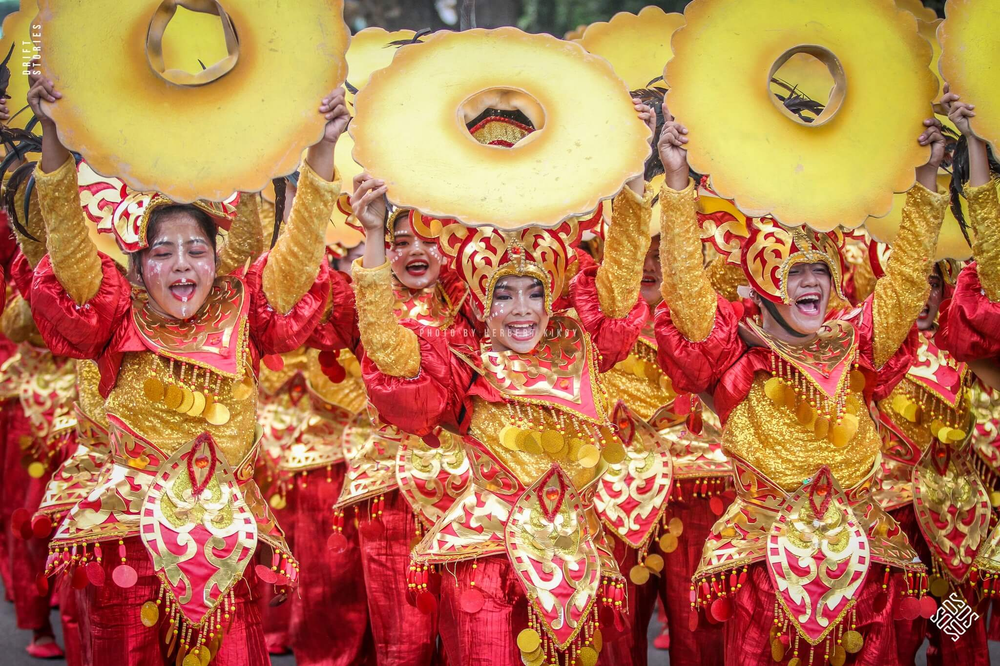
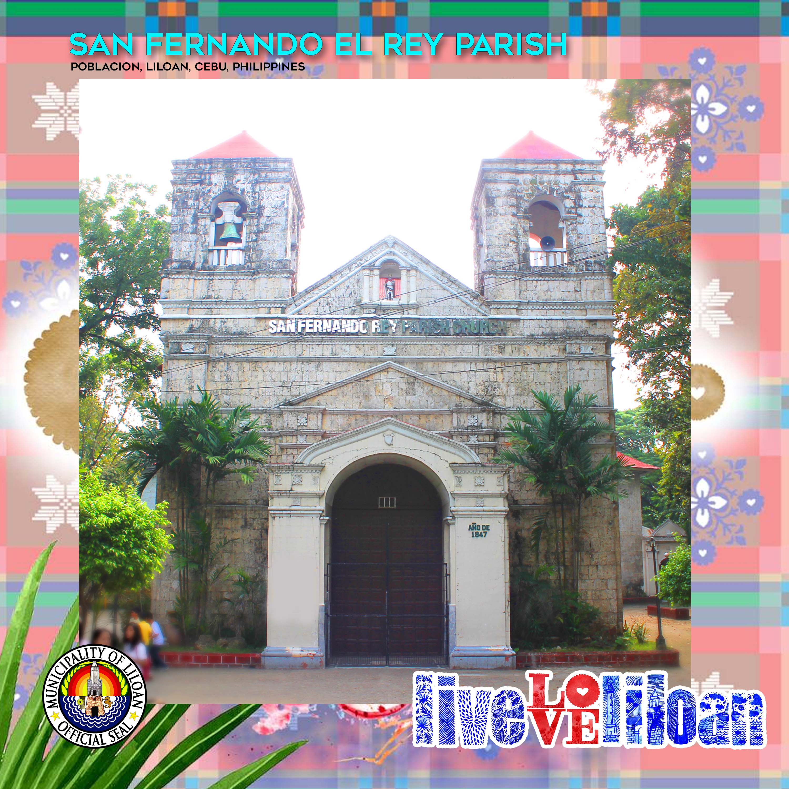
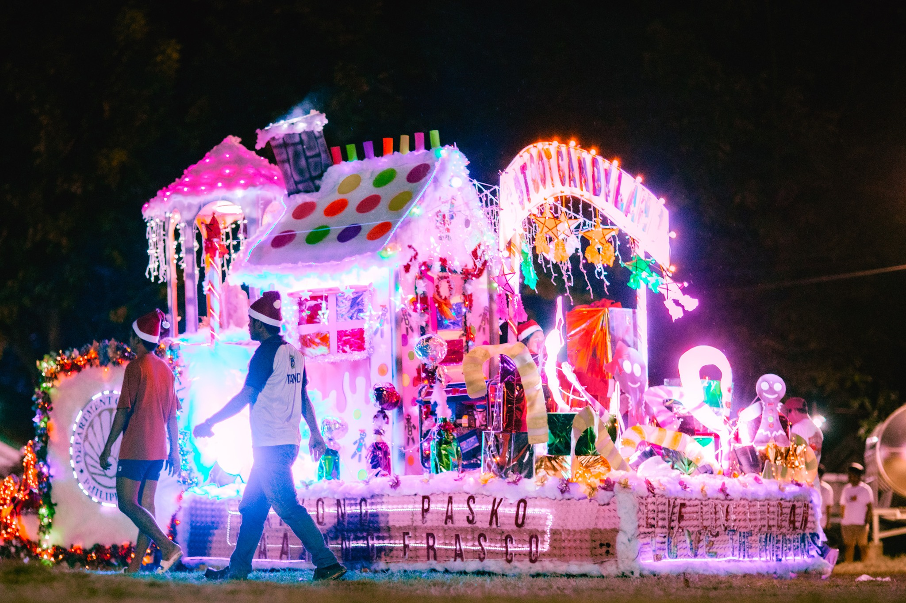
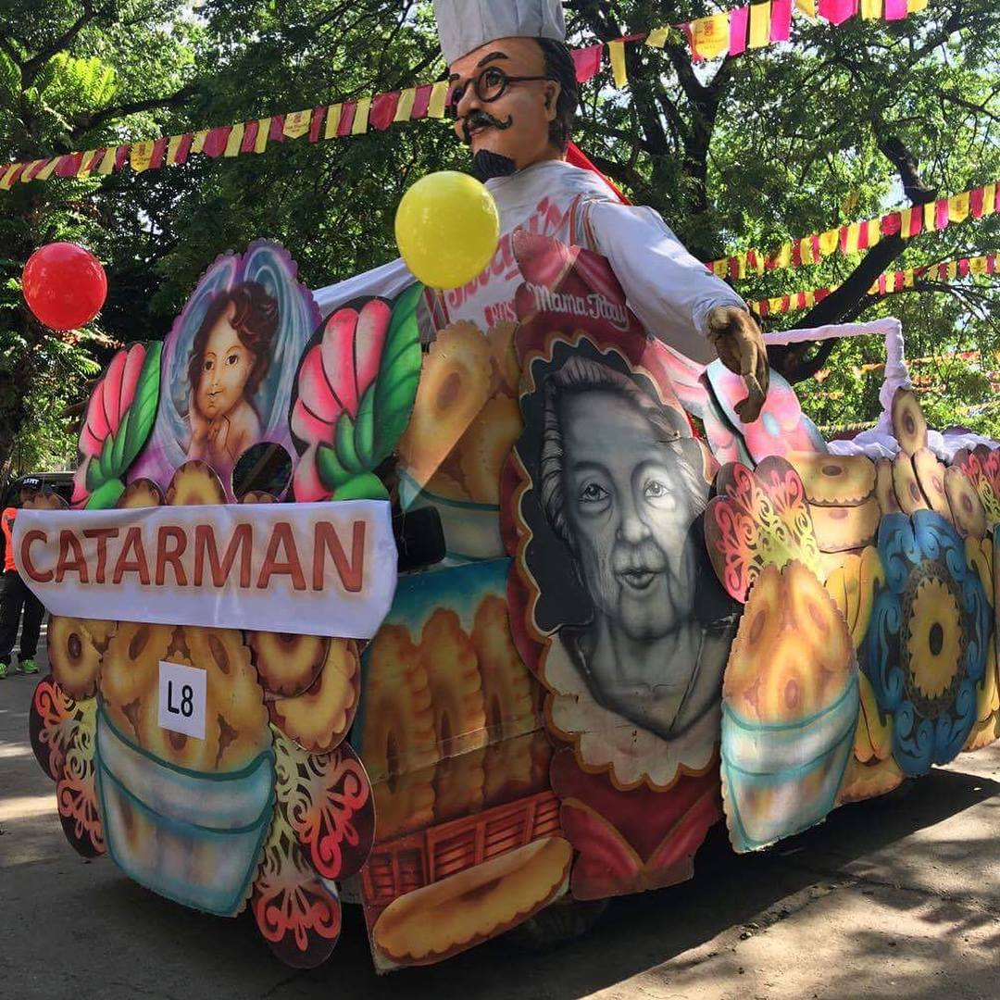

A TOWN IN FULL COLOR
Rosquillos Festival
Costumes, movement, and local pride come together in a celebration of Liloan’s signature delicacy.
CELEBRATE LILOAN
Music in the streets, color in every corner, and moments that bring a town together.

A TOWN IN FULL COLOR
Costumes, movement, and local pride come together in a celebration of Liloan’s signature delicacy.

FAITH & COMMUNITY
Discover the traditions that bring the community together around its patron saint.

A LITTLE EVENING MAGIC
As the lights come on, familiar places take on a festive glow.

MEET THE NEIGHBORHOOD
Local celebrations tell the stories of the people who make Liloan feel like home.
KEEP THE DISCOVERY GOING